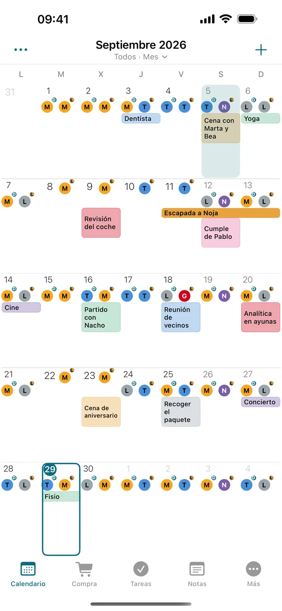
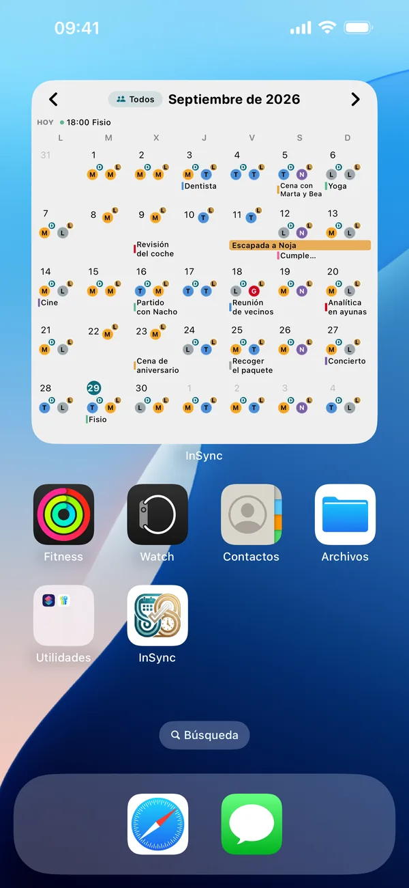
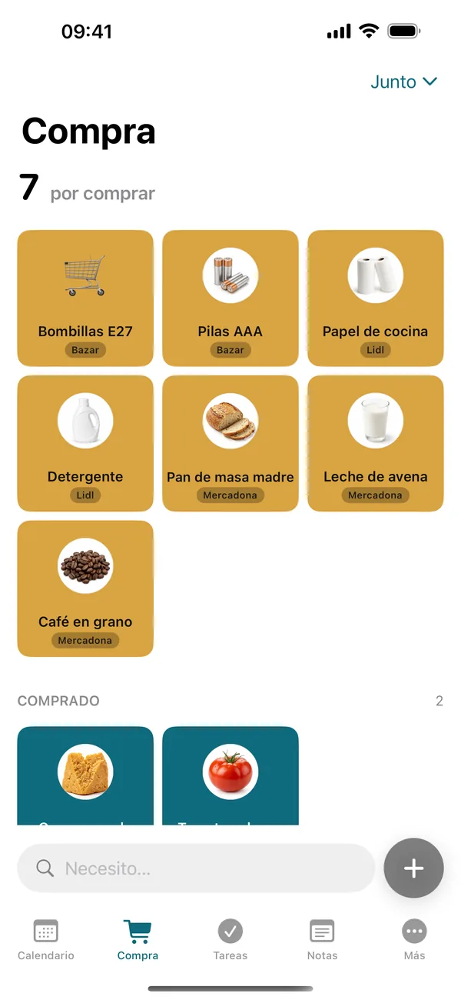

Calendario de turnos para iPhoneTus turnos, claros de un vistazo.
Mete tu cuadrante una vez (rotativos, noches, guardias) y el mes se rellena solo. Lo ves en el calendario y en el widget, sin anuncios. Y si tu pareja también trabaja a turnos, veis los dos quién trabaja, quién libra y qué días libráis juntos.
Descárgala gratis en la App StorePara iPhone. Android, más adelante.
Se acabó la foto del cuadrante por WhatsApp.
Cada uno mete el suyo una vez y los dos lo veis en el mismo calendario. Lo que cambia uno le llega al otro en segundos, y sin cobertura sigue funcionando.



En dos minutos, el mes hecho.
-
Mete tu cuadrante
Eliges una plantilla —5x2, 4x2, 2-2-3, mañana, tarde y noche— o haces tu ciclo, y el mes se rellena solo. Un cambio suelto es un toque.
-
Invita a tu pareja, si quieres
Le mandas un código por WhatsApp. Cuando entra, cada uno ve los turnos del otro. Y si vas por tu cuenta, el calendario y el widget funcionan igual.
-
Mirad el mes
Quién trabaja, quién libra y los días que libráis juntos, con su corazón. Las horas del mes y los días libres que te quedan, también.
Para quien trabaja a turnos.
Turnos rotativos de enfermería, el cuadrante de policía o de Guardia Civil, guardias médicas o noches en la fábrica: si tu horario cambia cada semana, InSync te lo pone claro.
- Enfermería
- TCAE
- Medicina y guardias
- Policía
- Guardia Civil
- Bomberos
- Fábricas con turnos rotativos
- Seguridad
- Hostelería
Y para sus parejas, que no tienen por qué ir a turnos: si trabajas de lunes a viernes, lo marcas en un toque y también cuenta para saber cuándo libráis.
Gratis. Y Pro, si queréis más.
Gratis
0 €
- El calendario compartido y tus turnos
- Los turnos de tu pareja y «Libráis juntos»
- Horas trabajadas y días libres
- La compra y los recados
- El widget de hoy y el de la semana
InSync Pro
2,99 € al mes · 24,99 € al añoEl anual empieza con un mes de prueba gratis.
- Los widgets del mes, de cuatro semanas y de la compra
- Diez estilos para pintar los turnos
- Hasta 6 personas en el grupo y 5 calendarios de fuera
- Más viajes, notas y listas, con sus adjuntos
- Lo paga uno y lo tiene todo el grupo
Sin anuncios en ninguno de los dos.
Preguntas frecuentes
¿Mi pareja ve mis turnos gratis?
Sí. Ver los turnos del otro, el calendario compartido, la compra y los recados son gratis. InSync Pro es opcional.
¿Y si mi pareja tiene Android?
De momento InSync es solo para iPhone. La versión de Android llegará más adelante.
¿Sirve para turnos rotativos?
Sí. Eliges una plantilla (5x2, 4x2, 2-2-3, mañana/tarde/noche) o haces tu ciclo, y el mes se rellena solo. Un cambio suelto es un toque.
¿La puedo usar sin pareja?
Sí. El calendario de turnos, las horas trabajadas, los días libres y el widget funcionan igual sin nadie más.
¿Cuánto cuesta?
Es gratis y sin anuncios. InSync Pro es opcional: 2,99 € al mes o 24,99 € al año, el anual con un mes de prueba gratis, y lo paga una persona para todo el grupo.
¿Qué pasa con mis datos?
No lleva anuncios, no vende tus datos y no te pide la ubicación. Si adjuntas una foto, se le quitan las coordenadas antes de subirla. Todo, sin letra pequeña, en la política de privacidad.
¿Otra duda? Mira el soporte o lo que trae cada versión en novedades.
Mete tu cuadrante esta noche.
Mañana ya lo tienes en el widget.
Descárgala gratis
Para iPhone, con iOS 17 o posterior.